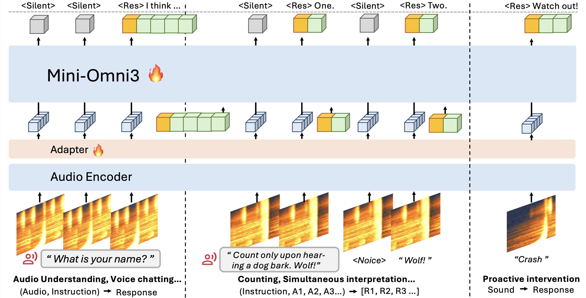
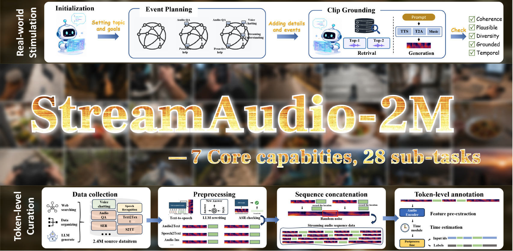

Mini-Omni3: Towards Unified Audio Interaction Models
that Continuously Perceive, Decide and Respond
1NTU 2NUS

Today’s Large Audio Language Models are stuck in an offline paradigm: you hand them a finished clip and wait for one reply. Streaming models exist, but each only handles a single, isolated task. We formalize the missing capability as a new concept, the Audio Interaction Model, and build the first one. Mini-Omni3 is a unified, always-on model that runs conventional offline tasks (ASR, S2TT), runs streaming tasks in real time, and achieves general streaming audio instruction following on a live stream, all inside a single all-in-one model that keeps listening and decides for itself when to speak.
The next-generation audio-language model. A streaming brain for interaction.

Watch Mini-Omni3 listen, decide and speak, live
Live on One Stream: Decide, then Speak
On a single continuous stream, Mini-Omni3 judges every chunk and chooses whether to stay silent or speak. Across the two clips below it spoke only when an event warranted it, and stayed silent the rest of the time.
| Clip | Mini-Omni3[Ours] | gpt-audioby OpenAI | gemini-omniby Google |
|---|---|---|---|
| sample_count.wav Counting a repeating sound, live |
⟨Silent⟩ ⟨Silent⟩ ⟨Silent⟩ ... === Audio piece 15 === once! === Audio piece 20 === twice! === Audio piece 25 === three times! === Audio piece 30 === four times! === Audio piece 35 === five times! |
❌ Record then infer Waits for the whole clip, then returns one summary. Never produces a running count as each event lands. |
⚠ Buffered window Buffers a fixed window first, so it lags behind the sound and cannot emit a live tally. |
| sample_music.wav A cough, then background music |
⟨Silent⟩ ⟨Silent⟩ ... === Audio piece 7 === It sounds like you're coughing; please take care and drink some water. === Audio piece 37 === The style of the music clip is likely jazz, characterized by its instrumental focus on improvisation and complex harmonies. |
⚠ Ignores non-speech Treats the music as noise and stays silent on the cough unless it is explicitly asked. |
⚠ Cannot fuse events Can identify the music alone, but misses the cough and cannot connect the two events. |
SoundFlow: training models with an always-on perceive-decide-respond loop

The real world never pauses to hand over a finished clip, so an interaction model has to keep listening and decide for itself, instant by instant, whether this moment deserves a reply. That moves audio modeling from answering finished clips to running a continuous loop, and from a stack of single-task models to one model where recognition, translation and dialogue are all instructions inside the same always-on stream. SoundFlow covers the whole pipeline: stitching short clips into long interactions for data, chunk-level decision training with history review and comprehension-aware silence, and asynchronous FIFO inference that cuts first-frame latency by 4.5×.
StreamAudio-2M
A large-scale streaming instruction-following corpus
StreamAudio-2M covers seven capabilities: audio understanding, real-time ASR, speech translation, voice chatting, proactive response, and environment-aware agent. It is built by collecting clips from real-world datasets (AudioSet, CommonVoice, CoVoST2, MOSS, and more), synthesizing text into speech with CosyVoice, then concatenating them into streaming sequences with environmental noise and token-level annotation.
Results
Mini-Omni3 keeps its foundational capabilities intact while becoming markedly stronger on speech-driven input, and it shows the strongest proactive intervention of every model we compare against.